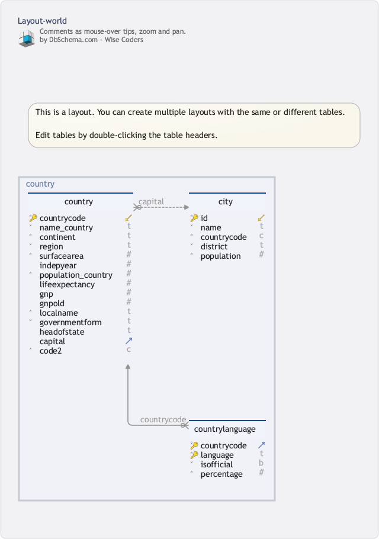

BD I: Algèbre Relationnelle
Cadre formel pour la manipulation de tables
2024-09-13
Le modèle relationnel
Formulé par E. Codd en 1970
Fondé sur la théorie des relations (partie de la théorie naïve des ensembles)
-
Propose une solution pour
- la modélisation
- l’interrogation de données
Facile à traduire/mettre en œuvre dans des langages réels comme
Structured Query Language (SQL)ou dans des environnements de calcul orientés données commeR/dplyr
Un peu de formalisation
Rappel sur la notion de relation (au sens classique)
Definition : Domaine
Un ensemble d’éléments
Exemples : entiers \(\mathbb{Z}\), flottants, chaines de caractères \(\mathcal{A}^*\), date, …
Les types d’un langage de programmation comme C, Java, …
Remarque
-
Un domaine peut se définir :
en extension (en donnant la liste de toutes les valeurs possibles) ou
en intention (en donnant une propriété caractéristique).
Produit cartésien
Définition : Produit cartésien
Le Produit cartésien d’une liste de domaines \(D_1, D_2, \dots, D_k\), noté
\[D_1 \times D_2 \times \dots \times D_k\]
est l’ensemble
\[\Bigl\{(t_1,t_2,\dots,t_k);\ t_i\in D_i \text{ pour } i=1,\dots,k\Bigr\}\]
Un élément \(t=(t_1,t_2,\dots,t_k)\in D_1 \times D_2 \times \dots \times D_k\) est appelé \(k\) -uplet
Relations (classique)
Une Relation \(R\) est un sous-ensemble de
\[D_1\times D_2\times \cdots \times D_k\]
où \(D_1,...,D_k\) sont des domaines
\[R \subseteq D_1 \times D_2\times \cdots \times D_k\]
Exemple
Deux domaines
\[D_1=\left\{1,2,5\right\} \quad\text{et}\quad D_2=\left\{2,4\right\}\]
Un produit cartésien
\[D_1 \times D_2 = \left\{(1,2),(1,4),(2,2),(2,4),(5,2),(5,4)\right\}\]
Une relation
\[R =\left\{(1,2),(1,4),(5,2),(5,4)\right\}\]
Une relation est un (sous-) ensemble (d’un produit cartésien)
On peut représenter \(R\) par le tableau :
| \(X_1\) | \(X_2\) |
|---|---|
| 1 | 2 |
| 1 | 4 |
| 5 | 2 |
| 5 | 4 |
Chaque ligne de la table correspond à un élément de la relation \(R\)
Relations (classiques)
Dans ce cours, toutes les relations ont un nombre fini d’éléments !
Définition : Cardinalité de la relation \(R\): \(|R|\)
On appelle cardinalité d’une relation \(R\), notée \(|R|\), le nombre d’éléments de \(R\).
Arité de la relation \(R\)
Soit \(R\subset D_1\times D_2\times \cdots \times D_k\), l’entier \(k\) est appelé arité de \(R\).
On parle parfois aussi de degré d’une relation.
Une relation binaire est une relation d’arité \(2\)
Schémas et relations
Relations et schémas
- Une relation (classique) peut se voir comme une table à deux dimensions :
- chaque ligne correspond alors à un \(k\)-uplet (si la relation est d’arité \(k\)),
- chaque élément d’une colonne est à valeur dans un domaine.
- Un domaine peut apparaître plusieurs fois dans la définition d’une relation.
En BD relationnelle, on donne un nom à chaque colonne
- Attribut: nom/rôle de la colonne. L’attribut suggère/précise la sémantique de la colonne
En BD on ne peut pas avoir deux attributs identiques (même nom, même domaine) dans une même table
Note
L’idée de nommer les colonnes plutôt que de les désigner par une position/un numéro se retrouve dans les sytèmes qui manipulent des données tabulaires (Pandas/Python, R, Spark, …).
Schéma d’une relation
Définition : schéma
Le Schéma d’une relation \(R\) est la donnée des attributs et domaines de la relation
Le schéma peut se noter
\[R(A_1\! :\! D_1,A_2\! :\! D_2,\dots,A_k\! :\! D_k)\]
où \(A_i\) : attribut et \(D_i\) : domaine.
Exemple de schéma : table bebes dans babynames
bd_2023-24> \dt
+-----------+-------+-------+-----------+
| Schema | Name | Type | Owner |
|-----------+-------+-------+-----------|
| babynames | bebes | table | boucheron |
+-----------+-------+-------+-----------+
bd_2023-24> \d bebes
+--------+------------------------+-----------+
| Column | Type | Modifiers |
|--------+------------------------+-----------|
| sexe | integer | |
| prenom | character varying(500) | |
| annee | integer | |
| nombre | integer | |
+--------+------------------------+-----------+\[\left((\textsf{sexe}, \mathbb{Z}), (\textsf{prenom}, \texttt{char}), (\texttt{annee}, \mathbb{Z}), (\texttt{nombre}, \mathbb{Z})\right)\]
Données INSEE. Une ligne de la table bébés nous informe qu’en France (héxagone?), pendant une annee, le nombre de naissances de sexe sexe, ayant reçu le prénom prenom est donnée par la colonne nombre.
bd_2023-24> SELECT *
FROM bebes
WHERE sexe=1 AND annee=2000 AND prenom='THÉO' ;
+------+--------+-------+--------+
| sexe | prenom | annee | nombre |
|------+--------+-------+--------|
| 1 | THÉO | 2000 | 7961 |
+------+--------+-------+--------+L’arité de bebes est \(4\), sa cardinalité est \(648 614\).
Relations et schémas : formalisation alternative
Formalisation alternative
En BD, l’ordre des éléments et l’ordre des colonnes n’a pas d’importance (on désigne les membres d’un \(k\)-uplet par leur nom plutôt que par leur position/rang)
La définition formelle diffère donc de celle d’une relation classique
Soient \(\{A_1,...,A_k\}\) un ensemble fini et \(D_1,...,D_k\) suite de domaines.
Notation
Une relation \(R\) de schéma \(R(A_1\! :\! D_1,A_2\! :\! D_2,\dots,A_k\! :\! D_k)\) est la donnée d’un ensemble d’éléments, noté \(\mathcal{R}\) et de \(k\) fonctions \(\mathcal{A}_1: \mathcal{R}\rightarrow D_1\), …, \(\mathcal{A}_k: \mathcal{R}\rightarrow D_k\).
Pour tout \(t\in \mathcal{R}\) et \(i\leq k\), on note \(t.A_i=\mathcal{A}_i(t)\) l’image par \(\mathcal{A}_i\) de \(t\).
Un élément \(t\) de \(\mathcal{R}\) est appelé tuple de la relation \(R\)
Conventions (suite)
Pour désigner l’ensemble des valeurs \(t.A_1,...., t.A_k\) associées à un tuple \(t\in \mathcal{R}\), on fixe un ordre arbitraire sur les attibuts et on note \(t=(t.A_1,...., t.A_k)\)
A un tuple \(t\) de \(\mathcal{R}\) correspondent les \(k\) valeurs \(t.A_1, \dots, t.A_k\)
On notera aussi \(R\) le domaine \(\mathcal{R}\) d’une relation \(R\).
Relations et schémas : formalisation
Quatre tuples de bebes : \(t_1, t_2, t_3, t_4\).
\[\begin{align*} t_1.\text{sexe} & = 1 \\ t_1.\text{prenom} & = \texttt{THEODULE} \\ t_1.\text{annee} & = 1961 \\ t_1.\text{nombre} & = 4 \end{align*}\]
Résumé informel
RELATION ↔︎ TABLE À DEUX DIMENSIONS
(NOM DE) COLONNE ↔︎ ATTRIBUT
EN-TÊTE DU TABLEAU ↔︎ SCHEMA DE LA RELATION
LIGNE ↔︎ TUPLE
ENSEMBLE DES LIGNES ↔︎ CONTENU DE LA RELATION
LMD : Opérateurs
Langage de manipulation de données
L’algèbre relationnelle est un système de calcul sur les tables
Elle est formée d’une collection d’opérateurs qui prennent en argument des tables et retournent des tables
Remarque:
Les opérateurs prennent en général des arguments supplémentaires qui ne sont pas des tables. La notion d’algèbre relationnelle est inspirée par les structures algébriques comme les groupes, les anneaux, les corps où des opérations internes opèrent sur une ensemble (par exemple \((\mathbb{R}, +, \times)\)), mais elle ne rentre pas exactement dans le cadre.
L’algèbre n’est pas aussi expressive qu’un langage de programmatoin classique (comme Python). C’est cela qui rend ce modèle de calcul intéressant : il permet de faire des choses pas triviales, mais il est plus facile à utiliser qu’un langage de programmation.
Opérateurs de base
Liste des opérateurs
L’algèbre relationnelle est d’abord un *Langage de Manipulation de Données& (LMD)}.
Union: \(\Large{\cup}\)
Intersection: \(\Large{\cap}\)
Différence: \(\Large{\backslash}\)
Projection: \(\Large{\Pi}\)
Sélection: \(\Large{\sigma}\)
Produit cartésien: \(\Large{\times}\)
Renommage: \(\Large{\rho}\)
s’appliquent à des relations pour produire d’autres relations (le résultat).
Union \(\cup\) et intersection \(\cap\)
Définition
L’union et l’intersection sont des opérations portant sur deux relations \(R_1\) et \(R_2\) de même schéma
\(T=R_1\cup R_2\) est constituée des tuples appartenant à \(R_1\) ou à \(R_2\).
\(T=R_1\cap R_2\) est constituée des tuples appartenant à \(R_1\) et à \(R_2\).
Les Schémas de \(R_1\cup R_2\), \(R_1\cap R_2\) sont les mêmes que ceux de \(R_1\) et \(R_2\)
Union : exemple
-- THEO_1900
+------+-----------+-------+--------+
| sexe | prenom | annee | nombre |
|------+-----------+-------+--------|
| 1 | THEOBALD | 1900 | 6 |
| 1 | THEODORE | 1900 | 227 |
| 1 | THEOPHILE | 1900 | 309 |
| 1 | THEODOSE | 1900 | 3 |
| 1 | THEODULE | 1900 | 39 |
| 1 | THEOPHANE | 1900 | 3 |
+------+-----------+-------+--------+
-- THEO_2000
|------+-----------+-------+--------|
| 1 | THEO | 2000 | 6 |
| 1 | THEODOR | 2000 | 3 |
| 1 | THEOPHILE | 2000 | 336 |
| 1 | THEODORE | 2000 | 149 |
| 1 | THEOPHANE | 2000 | 47 |
| 1 | THEOPHYLE | 2000 | 4 |
| 1 | THEOTIME | 2000 | 73 |
| 1 | THEOS | 2000 | 3 |
| 1 | THEOTIM | 2000 | 4 |
+------+-----------+-------+--------+THEO_1900 ∪ THEO_2000
+------+-----------+-------+--------+
| sexe | prenom | annee | nombre |
|------+-----------+-------+--------|
| 1 | THEO | 2000 | 6 |
| 1 | THEOBALD | 1900 | 6 |
| 1 | THEODOR | 2000 | 3 |
| 1 | THEOPHANE | 2000 | 47 |
| 1 | THEODORE | 1900 | 227 |
| 1 | THEODORE | 2000 | 149 |
| 1 | THEODOSE | 1900 | 3 |
| 1 | THEODULE | 1900 | 39 |
| 1 | THEOPHANE | 1900 | 3 |
| 1 | THEOPHILE | 1900 | 309 |
| 1 | THEOTIME | 2000 | 73 |
| 1 | THEOPHILE | 2000 | 336 |
| 1 | THEOPHYLE | 2000 | 4 |
| 1 | THEOS | 2000 | 3 |
| 1 | THEOTIM | 2000 | 4 |
+------+-----------+-------+--------+Intersection : exemple
-- THEO_1900
+------+-----------+-------+--------+
| sexe | prenom | annee | nombre |
|------+-----------+-------+--------|
| 1 | THEOBALD | 1900 | 6 |
| 1 | THEODORE | 1900 | 227 |
| 1 | THEOPHILE | 1900 | 309 |
| 1 | THEODOSE | 1900 | 3 |
| 1 | THEODULE | 1900 | 39 |
| 1 | THEOPHANE | 1900 | 3 |
+------+-----------+-------+--------+
-- THEOD_1900
+------+-----------+-------+--------+
| sexe | prenom | annee | nombre |
|------+-----------+-------+--------|
| 1 | THEODORE | 1900 | 227 |
| 1 | THEODOSE | 1900 | 3 |
| 1 | THEODULE | 1900 | 39 |
+------+-----------+-------+--------+Différence
Définition
La différence de deux relations \(R_1\) et \(R_2\) (de même schéma) est une relation \(T\)
de même schéma que \(R_1\) et \(R_2\)
constituée des tuples appartenant à \(R_1\) et n’appartenant pas à \(R_2\).
On note \(T = R_1 - R_2\).
Opération non commutative !
\(R_1 - R_2\neq R_2 - R_1\) (en général).
Différence : exemple
-- THEO_1900
+------+-----------+-------+--------+
| sexe | prenom | annee | nombre |
|------+-----------+-------+--------|
| 1 | THEOBALD | 1900 | 6 |
| 1 | THEODORE | 1900 | 227 |
| 1 | THEOPHILE | 1900 | 309 |
| 1 | THEODOSE | 1900 | 3 |
| 1 | THEODULE | 1900 | 39 |
| 1 | THEOPHANE | 1900 | 3 |
+------+-----------+-------+--------+
-- THEOD_1900
+------+-----------+-------+--------+
| sexe | prenom | annee | nombre |
|------+-----------+-------+--------|
| 1 | THEODORE | 1900 | 227 |
| 1 | THEODOSE | 1900 | 3 |
| 1 | THEODULE | 1900 | 39 |
+------+-----------+-------+--------+Produit Cartésien
Définition
-
Soient:
- \(R_1\) de schéma \(R_1(A_1,A_2,...,A_k)\)
- \(R_2\) de schéma \(R_2(B_1,B_2,...,B_\ell)\)
- avec \(A_i\neq B_j\), pour tout \(i=1,...,k\), \(j=1,..,\ell\)
Dans le contexte “classique” : \(R_1 \times R_2= \{(e_1,e_2): e_1\in R_1, e_2\in R_2\}\)
\(R=R_1 \times R_2\) de schéma \(R(A_1,A_2,...,A_k,B_1,B_2,...,B_\ell)\). Le schéma de \(R\) est l’union des schémas de \(R_1\) et \(R_2\)
Attention
En algèbre relationnelle, cette opération est commutative ( \(R_1\times R_2 = R_2\times R_1\) ) et associative
Produit cartésien :
Définition formelle
\(R=R_1\times R_2\) est la relation de schéma \(R(A_1,A_2,...,A_k,B_1,B_2,...,B_\ell)\) vérifiant~:
- Pour tout \(t\in R\), il existe \(t_1\in R_1\), \(t_2\in R_2\) (\(\forall t \in R, \exists t_1 \in R_1, \exists t_2 \in R_2, \ldots\)) tels que :
\[t.A_1=t_1.A_1, \ldots, t.A_k=t_1.A_k,\quad t.B_1=t_2.B_1, \ldots, t.B_\ell=t_2.B_\ell\]
- Réciproquement, pour tout \(t_1\in R_1\), \(t_2\in R_2\) , il existe \(t\in R\) tels que :
\[t.A_1=t_1.A_1, \ldots, t.A_k=t_1.A_k,\quad \text{et} \quad t.B_1=t_2.B_1, \ldots, t.B_\ell=t_2.B_\ell\]
\[\forall t_1 \in R_1, \forall t_2 \in R_2, \exists t \in R, \qquad t.A_1=t_1.A_1, \ldots, t.A_k=t_1.A_k,\quad \text{et} \quad t.B_1=t_2.B_1, \ldots, t.B_\ell=t_2.B_\ell\]
Produit cartésien : exemple
Projection ( \(\Large{\pi}\) )
Définition
- La projection d’une relation \(R\) de schéma \(R(A_1,\dots, A_k)\) sur les attributs \(A_{i_1}, \dots, A_{i_p}\), \(i_1,..., i_p\in \{1,...,k\}\), est la relation \(S\)
- de schéma \(S(A_{i_1}, \dots,A_{i_p})\)
- dont les tuples sont obtenus par élimination des attributs non mentionnés dans \(A_{i_1}, \dots, A_{i_p}\) (et par élimination des doublons).
- On note \(S = \pi_{A_{i_1}, \dots, A_{i_p}} (R)\).
- Définition formelle :
\[s\in S\quad \iff \quad \exists t\in R, \forall n\in\left\{1,\dots,p\right\}\qquad s.A_{i_n}=t.A_{i_n}\]
Remarque
Implicitement, on a élimination des doublons car une projection peut produire plusieurs fois le même tuple.
Remarque
À la différence des opérations ensemblistes ∩, ∪, ∖, ×, la projection ne fait pas intervenir que des tables.
On peut considérer la projection comme une fonction à deux arguments, avec un premier argument de type table, et un second argument constitué par une liste d’attributs.
On peut aussi considérer la projection comme une fonction avec un nombre variable d’arguments. Un premier argument de type table, puis de arguments qui désignent des attributs de la table. Si on accepte ce point de vue, on peut adopter la notation
On note \[S = \pi(R, {A_{i_1}, \dots, A_{i_p}})\] au lieu de \(S = \pi_{A_{i_1}, \dots, A_{i_p}} (R)\)
Dans la suite, nous utiliserons cette possibilité.
Projection : Exemple
Π(THEO_1900, prenom, nombre)
+-----------+---------+
| prenom | nombre |
|-----------+---------+
| THEODORE | 227 |
| THEODOSE | 3 |
| THEODULE | 39 |
+-----------+---------+Ici, aucune éliminitation de doublons n’a été nécessaire
Sélection ( \(\Large{\sigma}\) )
Définition
-
La sélection d’une relation \(R\) par une condition \(C\) est une relation \(S\)
de même schéma que \(R\)
dont les tuples sont ceux de \(R\) qui satisfont la condition \(C\).
On note \(S = \sigma_C (R)\).
-
La condition \(C\)
s’exprime à l’aide des noms d’attributs de la relation ou de constantes (pour les opérandes)
on peut utiliser des opérateurs arithmétiques de comparaison ( \(=, \neq, \leq, \geq, <, >\) ) ainsi que des connecteurs logiques ( \(\lnot, \land, \lor\) )..
Remarque
À la différence des opérations ensemblistes ∩, ∪, ∖, ×, comme la projection, la sélection ne fait pas intervenir que des tables.
On peut considérer la sélection comme une fonction à deux arguments, avec un premier argument de type table, et un second argument constitué par une condition (une expression dont l’évaluation sur chaque ligne de la table retourne Vrai, Faux, ou Indéterminé).
On peut aussi considérer la sélection comme une fonction avec un nombre variable d’arguments. Un premier argument de type table, puis de arguments qui représentent des expressions susceptibles d’être évaluées sur chaque ligne de la table. Une ligne fera partie de la table résultat, si elle satisfait toutes les expressions.
On note \[S = \sigma(R, {C_{1}, \dots, C_{p}})\] au lieu de \(S = \sigma_{C_1 \wedge C_2 \wedge \ldots \wedge C_p } (R)\)
Dans la suite, nous utiliserons cette possibilité.
Notons que dans un langage comme Python, nous ne disposons pas d’emblée d’un type expression et que la notation proposée ici ne se code pas trivialement en Python.
En langage R, on dispose d’un type expression, la notation proposée ici est mise en œuvre dans le package dplyr.
Sélection : Exemple
σ(THEO_1900, prenom LIKE ‘THEOD%’)
Renommage
Définition
- Soit \(R\) de schéma \(R(A_1,\dots, A_k)\), le renommage d’un attribut \(A_i\), \(i\leq k\), en \(B\) est une relation \(S\) :
- de même contenu (mêmes lignes)
- de schéma \(S(A_1,...,A_{i-1},B,A_{i+1},..., A_k)\)
- On le note \(S=\rho_{A_i\mapsto B}(R)\)
Remarque
Comme la projection et la sélection, le renommage ne fait pas intervenir que des tables.
On peut considérer le renommage comme une fonction avec un nombre variable d’arguments. Un premier argument de type table, puis de arguments qui représentent des expressions indiquant comment doivent être renommées certains attributs.
On note \[S = \rho(R, A_{i_1}\mapsto B_1,\ldots, A_{i_p}\mapsto B_p)\] au lieu de \(S=\rho_{A_{i_1}\mapsto B_1,\ldots, A_{i_p}\mapsto B_p}(R)\)
Dans la suite, nous utiliserons cette possibilité.
Notons que dans un langage comme Python, nous ne disposons pas d’emblée d’un type expression et que la notation proposée ici ne se code pas trivialement en Python.
En langage R, on dispose d’un type expression, la notation proposée ici est mise en œuvre dans le package dplyr.
Renommage : Exemple
-- THEOD_1900
+------+-----------+-------+--------+
| sexe | prenom | annee | nombre |
|------+-----------+-------+--------|
| 1 | THEODORE | 1900 | 227 |
| 1 | THEODOSE | 1900 | 3 |
| 1 | THEODULE | 1900 | 39 |
+------+-----------+-------+--------+ρ(THEOD_1900, sexe→sex, prenom→name, annee→year, nombre→count)
-- THEOD_1900
+------+-----------+-------+--------+
| sex | name | year | count |
|------+-----------+-------+--------|
| 1 | THEODORE | 1900 | 227 |
| 1 | THEODOSE | 1900 | 3 |
| 1 | THEODULE | 1900 | 39 |
+------+-----------+-------+--------+Utilité Va permettre d’étendre certains opérateurs pour des relations de schémas non-disjoints
Résumé
Algèbre relationnelle
Opérations ensemblistes classiques.
Projection : élimine des colonnes
Sélection : élimine des lignes
Pour interroger une BD, on compose ces opérateurs :
Exemple
π(σ(THEO_1900, prenom LIKE ‘THEOD%’), prenom, nombre)
ρ(π(σ(THEO_1900, prenom LIKE ‘THEOD%’), prenom, nombre), prenom→name, nombre→count)
De la composition aux tuyeaux (pipelines)
On peut rendre la composition de fonctions plus lisible (pour l’humain) en reprenant un mécanisme d’Unix : le pipe (tuyeau) |
Plutôt qu’écrire \(g(f(x,y), z, t)\), on convient d’écrire f(x,y) | g(z, t) voire x | f(y) | g(z,t)
Et pour rendre l’expression encore plus lisible on peut écrire
De la composition aux tuyeaux (suite)
On peut ainsi réécrire
ρ(π(σ(THEO_1900, prenom LIKE ‘THEOD%’), prenom, nombre), prenom→name, nombre→count)
en
Opérations complémentaires : les jointures
Les jointures
On va définir des opérations pratiques pour la manipulation de données : les jointures
Jointure
Jointure naturelle
\(\theta\)-jointure et équi-jointure
Jointure
Définition
La jointure \(T=R_1\bowtie_C R_2\) de deux relations \(R_1\) et \(R_2\) de schémas disjoints sous la condition \(C\) est la relation \(T\):
de schéma la concaténation des schémas de \(R_1\) et \(R_2\)
formée des tuples du produit cartésien \(R_1 \times R_2\) qui satisfont la condition \(C\)
Règles de formation de la condition de jointure : comme pour la sélection
Définition formelle
\[R_1 \bowtie_C R_2 = \sigma_C(R_1\times R_2)\]
Remarque
Comme la projection, la sélection et le renommage, la jointure ne fait pas intervenir que des tables.
On peut considérer la jointure comme une fonction avec un nombre variable d’arguments. Deux premiers arguments de type table, puis une expression dont l’évaluation permet de déterminer quels couples de lignes doivent figurer dans la table résultat
On note \[T = \bowtie(R, S, C)\] au lieu de \(T=R \bowtie_C C\)
Dans la suite, nous utiliserons cette possibilité.
Notons que dans un langage comme Python, nous ne disposons pas d’emblée d’un type expression et que la notation proposée ici ne se code pas trivialement en Python.
En langage R, on dispose d’un type expression, la notation proposée ici est mise en œuvre dans le package dplyr avec la fonction inner_join(),
Exemple sur le schéma world
Lier les pays (les lignes de country) à leur capitale, c’est à dire les couples de lignes de country et de city qui satisfont capital = id
Exemple sur le schéma world (suite)
Différentes variétés de jointures
Autour de la jointure ⋈(R, S, C) on a pris l’habitude de distinguer des types de jointure selon la forme de l’expression de jointure (la condition C)
On distingue
- les équi-jointures
- les θ-jontures
- les jointures naturelles
Équi-jointure,
Équi-jointure
Jointure avec égalité entre attributs de types comparables
θ-jointure
\(\theta\)-jointure
Condition de jointure entre attributs de types comparables et avec un opérateur différent de l’égalité, c’est-à-dire dans \(\left\{<,>,\leq,\geq, \neq\right\}\).
Jointure naturelle
Définition
C’est une équi-jointure concernant les attributs communs (même nom et même type) de deux relations
On ne garde dans le résultat qu’une copie des attributs communs
On considère
\(R_1\) d’attributs \(A_1,..,A_k,B_1,...,B_h\)
\(R_2\) d’attributs \(A_1,..,A_k,B_{h+1},...,B_\ell\)
\(A_1,..., A_k\) : attributs communs et \(\{B_1,...,B_h\}\cap \{ B_{h+1},...,B_\ell \}=\emptyset\)
Soit \(A'_1, ...., A'_k\) tels que \(\{A_1,..., A_k\}\cap \{ A'_1, ...., A'_k \}=\emptyset\)
Jointure naturelle (formalisation)
Considérons \(S\) d’attributs \(A_1',..,A_k',B_{h+1},...,B_l\) définie par :
\[S=\rho_{A_1\mapsto A_1'}(\rho_{A_2\mapsto A_2'}(\cdots (\rho_{A_k\mapsto A_k'}(R_2)\cdots ))\]
La jointure naturelle sur deux relations \(R_1\) et \(R_2\) est la relation
- d’attributs \(A_1,..,A_k,B_1,...,B_h, B_{h+1},...,B_\ell\)
- définie par : \[\pi_{A_1,..,A_k,B_1,...,B_h, B_{h+1},...,B_\ell}(R_1\bowtie_{C} S)\] où \(C\) est \((A_1=A_1') \wedge (A_2=A'_2) \wedge \ldots \wedge (A_k=A_k')\)
Exemple de Jointure naturelle
bd_2023-24> \d countrylanguage
+-------------+--------------+-----------+
| Column | Type | Modifiers |
|-------------+--------------+-----------|
| countrycode | character(3) | not null |
| language | text | not null |
| isofficial | boolean | not null |
| percentage | real | not null |
+-------------+--------------+-----------+
+--------------------+---------------+-----------+
| Column | Type | Modifiers |
|--------------------+---------------+-----------|
| countrycode | character(3) | not null |
| name_country | text | not null |
| continent | text | not null |
| region | text | not null |
| surfacearea | real | not null |
| indepyear | smallint | |
| population_country | integer | not null |
| lifeexpectancy | real | |
| gnp | numeric(10,2) | |
| gnpold | numeric(10,2) | |
| localname | text | not null |
| governmentform | text | not null |
| headofstate | text | |
| capital | integer | |
| code2 | character(2) | not null |
+--------------------+---------------+-----------+Jointure naturelle
On aurait pu décrire de façon plus explicite la jointure en précisant sur quels attributs s’effectue la jointure
Exemples de requêtes
- déterminer les noms des capitales des pays situés en Asie (
Asia)
Encore des opérations…
Jointure externe
Perte d’information dans jointure naturelle
Les tuples ne satisfaisant pas la condition (non appariés) disparaissent
Définition
On ajoute symboliquement” une ligne dont les valeurs sont vides (ou avec valeur spéciale NULL) pour garder les tuples initiaux “non satisfaisants” après la jointure
On note cette opération entre deux relations \(R\) et \(S\) :
\[R \bowtie^+ S\]
Jointure externe (exemple)
\[\text{TrDep} \bowtie^+ \text{TrArr}\]
Division
Définition
La division ou quotient
d’une relation \(R\) de schéma \(R(A_1,A_2,\dots,A_k)\)
par une relation \(S\) de schéma \(S(A_{p+1},\dots ,A_k)\)
est la relation \(T\) de schéma \(T(A_1, \dots, A_p)\) formée des tuples qui complétés par chaque tuple de \(S\) donnent un tuple de \(R\).
Autrement dit
\[\begin{array}{l} t\in T(A_1,\dots,A_p) \quad \Longleftrightarrow \\ \forall s\in S(A_{p+1},\dots ,A_k) \quad \exists r\in R \quad \begin{cases} t.A_1=r.A_1, \dots, t.A_p=r.A_p\\ s.A_{p+1}=r.A_{p+1},\dots, s.A_{k}=r.A_{k} \end{cases} \end{array}\]
On note \[T = R \div S\]
Division (exemple)
Lister les langues parlées sur tous les continents
On aimerait écrire une expression qui renvoie un résultat correct quelque soit les conventions adoptées sur la définition de continent (les Amériques forment-elles un ou deux continents, etc)
Interdéfinissabilité des opérateurs
L’union, la différence, le produit cartésien, la sélection et la projection et le renommage sont suffisants pour définir tous les opérateurs que l’on a vu.
Mais avoir un panier plus large d’opérateurs simplifie l’écriture des requêtes.
Quelques définitions
Pour la Jointure : \(R \bowtie_C S \equiv \sigma_C (R \times S)\)
Pour l’intersection : \(A \cap B = A \cup B - ((B - A) \cup (A - B))\)
Définition de la division
Petite histoire
L’algèbre relationnelle est la définition d’un modèle de calculabilité restreint.
Comme les modèles de calcul classiques (les langages de programmation comme Python), elle est formée de briques de base (les opérateurs) et de mécanismes d’assemblage (la composition de fonction).
Le modèle de calcul relationnel est bien plus simple qu celui d’un langage de programmation (pas de boucles while, for). Il est aussi moins expressif. On peut montrer qu’il existe de questions qui sont solubles avec un langage de programmation mais qui ne le sont pas avec l’algèbre relationnelle.
L’histoire de l’algèbre relationnelle éclaire le développement des bases de données.
Depuis Wikipedia
In the 1960s and 1970s he [Codd] worked out his theories of data arrangement, issuing his paper “A Relational Model of Data for Large Shared Data Banks” in 1970.[ To his disappointment, IBM proved slow to exploit his suggestions until commercial rivals started implementing them.
Initially, IBM refused to implement the relational model to preserve revenue from IMS/DB. Codd then showed IBM customers the potential of the implementation of its model, and they in turn pressured IBM. Then IBM included in its Future Systems project a System R subproject – but put in charge of it developers who were not thoroughly familiar with Codd’s ideas, and isolated the team from Codd. As a result, they did not use Codd’s own Alpha language but created a non-relational one, SEQUEL. Even so, SEQUEL was so superior to pre-relational systems that it was copied, in 1979, based on pre-launch papers presented at conferences, by Larry Ellison, of Relational Software Inc, in his Oracle Database, which actually reached market before SQL/DS – because of the then-already proprietary status of the original name, SEQUEL had been renamed SQL.
Codd continued to develop and extend his relational model, sometimes in collaboration with Christopher J. Date. One of the normalised forms, the Boyce–Codd normal form, is named after him.
Codd’s theorem, a result proven in his seminal work on the relational model, equates the expressive power of relational algebra and relational calculus.
Fin
MA15Y030 – Bases de Données – L3 MIASHS – UParis Cité
Algèbre Relationnelle